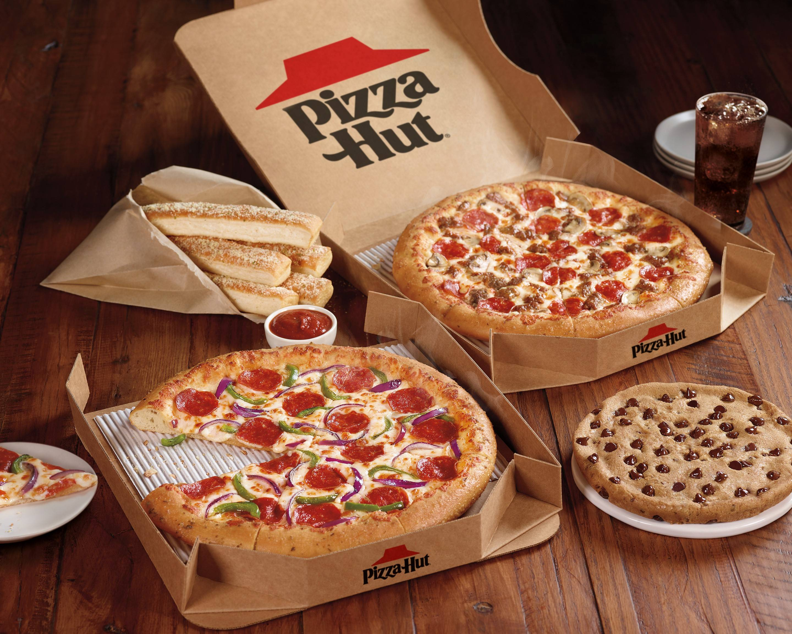

For ordering food plz click on the photo.
Pizza Hut was founded on June 15, 1958, by two brothers, Dan and Frank Carney, both Wichita State students, as a single location in Wichita, Kansas.[6] Six months later they opened a second outlet and within a year they had six Pizza Hut restaurants. The brothers began franchising in 1959. The iconic Pizza Hut building style was designed in 1963 by Chicago architect George Lindstrom[7] and was implemented in 1969.[8]
PepsiCo acquired Pizza Hut in November 1977.[9][10] Twenty years later, Pizza Hut (alongside Taco Bell and Kentucky Fried Chicken) were spun off by PepsiCo on May 30, 1997, and all three restaurant chains became part of a new company named Tricon Global Restaurants, Inc. The company assumed the name of Yum! Brands on May 22, 2002.[11][12]
Before closing in 2015, the oldest continuously operating Pizza Hut was in Manhattan, Kansas, in a shopping and tavern district known as Aggieville near Kansas State University. The first Pizza Hut restaurant east of the Mississippi River was opened in Athens, Ohio, in 1966 by Lawrence Berberick and Gary Meyers.[13]
The company announced a rebrand that began on November 19, 2014, in an effort to increase sales, which had dropped in the previous two years. The menu was expanded to introduce various items such as crust flavors and 11 new specialty pizzas. Work uniforms for employees were also refreshed.[14] In 2017, Pizza Hut was listed by UK-based company Richtopia at number 24 in the list of 200 Most Influential Brands in the World.[15][16]
On June 25 and 27, 2019, it was reported that Pizza Hut was bringing back their logo and the red roof design that was used from 1976 until 1999.[17][18]
On August 7, 2019, Pizza Hut announced its intention to close about 500 of its 7,496 dine-in restaurants in the US, by the middle of 2021.[19]
The first Pizza Hut opened on June 15, 1958, in Wichita, Kansas.
On August 18, 2020, it was announced that Pizza Hut will be closing 300 restaurants after the bankruptcy of NPC International, one of its franchise providers. A company representative stated, "We have continued to work with NPC and its lenders to optimize NPC's Pizza Hut restaurant footprint and strengthen the portfolio for the future, and today's joint agreement to close up to 300 NPC Pizza Hut restaurants is an important step toward a healthier business."[20][21]